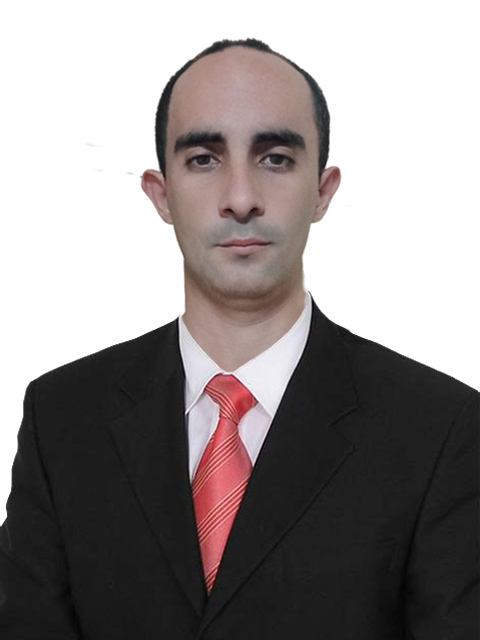

Ciego de Avila, 65304, (Cuba) Ciego de Ávila, Cuba
Versatile digital professional with over 13 years of technical experience and a strong foundation in frontend development, graphic design, and bilingual communication. Skilled in AI-powered content creation (image and video generation), social media management, copywriting in English and Spanish, and WordPress development. Proven ability to manage technical systems, create engaging digital content, and deliver results independently in remote environments. Currently developing two innovative web applications for the Cuban market, demonstrating entrepreneurial vision and full-stack capability. Profesional digital versátil con más de 13 años de experiencia técnica y una sólida formación en desarrollo frontend, diseño gráfico y comunicación bilingüe. Experto en creación de contenido con IA (generación de imágenes y video), gestión de redes sociales, copywriting en inglés y español, y desarrollo WordPress. Capacidad demostrada para gestionar sistemas técnicos, crear contenido digital atractivo y obtener resultados de forma independiente en entornos remotos. Actualmente desarrollando dos aplicaciones web innovadoras para el mercado cubano, demostrando visión empresarial y capacidad full-stack.
May 2024 - Present Mayo 2024 - Presente
Oct 2017 - Apr 2024 Oct 2017 - Abr 2024
Sep 2012 - Sep 2017 Sep 2012 - Sep 2017
Bachelor of Science, Bachelor of Education in Computer Science, Feb 2022 Licenciatura en Ciencias, Licenciatura en Educación en Ciencias de la Computación, Feb 2022
2025 - Present 2025 - Presente
2025 - Present 2025 - Presente